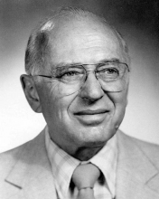

Please note: the AAS Obituaries are temporarily being hosted on this website while their full content is being ingested into the PubPub publishing platform newly adopted by the Bulletin of the American Astronomical Society. When the migration is complete, your existing links will take you to the final, migrated content. Contact peter.williams@aas.org with any questions.
Kenneth Ingvard Greisen (1918-2007)
Cornell University Emeritus Professor of Physics, Kenneth I. Greisen, died on March 17, 2007 of cancer at the Hospicare residence in Ithaca, New York. He was 89 years old. Prof. Greisen was well-known for his participation in the Manhattan Project at Los Alamos and for his many contributions to the study of cosmic ray physics. More quietly, Prof. Greisen also made significant contributions to the teaching of Physics at the high school and university levels. He was of service to the Cornell and Ithaca communities in many ways both during his university career and after his retirement.
Kenneth Ingvard Greisen was born in Perth Amboy, New Jersey, on January 24, 1918, to Signa and Ingvard Greisen. Ken attended Wagner College 1934-1935 and then Franklin and Marshall College, where he ran on the track team and graduated summa cum laude with the prestigious Henry S. Williamson Medalist award in 1938. Ken then entered graduate school in physics at Cornell University, where he became the first American student of the eminent Italian physicist Bruno B. Rossi. Together they carried out a study that yielded quantitative verification of the relativistic dilation of time intervals and an improved estimate of the mean life of mesotrons at rest. Their review article on ``Cosmic Ray Theory'' in 1941 was a standard for many years. Ken's Ph.D. thesis entitled ``Intensity of Cosmic Rays at Low Altitude and the Origin of the Soft Component,'' along with related articles, appeared in 1942 and 1943. During this very productive period, Ken also married Betty Chase, a Cornell biology graduate student.
Upon graduation, Ken joined the Manhattan Project in Los Alamos, New Mexico. He was among the leaders of the group that designed and built the explosive charge that initiated the nuclear reaction in the first atomic bomb. Witnessing the July 16, 1945 Trinity explosion, he provided an eyewitness account that has become an important historical record. After the explosion, in a remark typical of him, he is widely quoted as saying ``My God, it worked!'' Following the war, Ken, along with Hans Bethe and other scientists, sent a letter to the President strongly advocating only non-military use of nuclear research.
Ken and family returned to Cornell University and Ithaca, where he remained, except for sabbatical periods, for the rest of his life. He spent the next years studying cosmic rays and the showers of particles produced by them in the atmosphere and various absorbers. An array of scintillators atop Cornell buildings allowed both the direction and intensity of air showers to be determined. Detectors 600m underground, in a salt mine near Ithaca, detected only mesons with sufficient energy to penetrate so much material. In summers, detectors at a range of altitudes from the bottom to the top of Mount Evans (Colorado) provided altitudinal studies of cosmic-ray air showers and attracted an article in Life magazine.
In early 1966, Ken realized that cosmic ray protons at energies above 6 x 1019 eV will interact significantly with the extremely low energy photons of the Cosmic Microwave Background, which had recently been discovered. If the sources of such extremely high-energy cosmic rays are at cosmological distances, this interaction should cause a sharp cutoff in the cosmic ray spectrum. The effect has been named the GZK cutoff after Greisen's paper and an independent, slightly later paper by Georgi Zatsepin and Vadim Kuzmin. Ken's paper also predicted a small dip in the cosmic-ray spectrum at energies of 1018-1020 eV, due to pair production by the thermal photons.
Cosmic rays of such high energies cause the Earth's atmosphere to fluoresce, making the Earth itself into a detector. Beginning in the early 1960s, Ken and his group developed instruments to measure this fluorescence and implemented them, in a "fly's eye" configuration, in the hills surrounding Ithaca. The concept was taken around 1970 to the clearer skies of Utah, where a University of Utah group has extended and improved on the Cornell ideas to create the High Resolution (HiRes) Fly's Eye detector. Two weeks before Ken's death, the Utah collaboration reported observations of the high-energy cosmic ray spectrum clearly showing the GZK cutoff as well as the predicted dip at lower energies. The Pierre Auger Observatory, currently nearing completion in Argentina, will also use fluorescence detectors as one of two methods of studying the high-energy end of the cosmic-ray spectrum.
In the late 1960s, Ken's research interests extended to the field of gamma-ray astronomy. These led to a number of high-altitude balloon flights carrying large-area gamma-ray telescopes. One such flight found pulsed emission synchronous with the Crab Nebula NP0532, providing the first observation of high-energy gamma rays from a pulsar. As his studies became more astronomical in nature, Ken joined the AAS in 1966, and, in 1968, Ken was named to the AAS organizing committee that established the High Energy Astrophysics Division (HEAD) of the AAS. Ken was selected as HEAD's first Chair for 1970 and 1971. Ken was also on the organizing committee that helped establish IAU Commission 48 on High Energy Astrophysics, also in 1970. He was subsequently elected to the National Academy of Sciences in 1974.
Ken devoted much of his efforts to teaching. In the late 1950s, he contributed to the work of the Physical Sciences Study Committee at MIT, which was the source of the PSSC high-school physics curriculum. At Cornell, Ken developed and taught for many years a course fundamental to the preparation of students to be professional physicists. Beginning in 1969, he presided over a team from the Physics and Science Education Departments to completely redesign the teaching of introductory physics, producing an innovative, self-paced, auto-tutorial course that retains that format today. Ken regularly concerned himself with the overall structure of physics courses at Cornell, assigned himself early hours for his courses so that his students could take popular courses in other departments, and heavily supported the careers of those faculty members who distinguished themselves as teachers.
Ken served on many national committees, was university Ombudsman 1975-1977, was Chairman of the Astronomy Department 1976-1979, and was Dean of the Faculty 1978-1983. He was granted an Emeritus professorship in 1984 and retired in 1986. The affection his colleagues felt for Ken was perhaps best illustrated when a Japanese Post-Doc and life-long friend named his first child Kenichi. Comments received at his death emphasized his ``great competence'' as a scientist; his kindness, generosity, and concern for his students; and his ``thoughtful human values'' and ``great integrity'' as a ``man of character.''
Ken loved music, attending many concerts, playing flute and recorder, and singing in church and senior choirs. He greatly enjoyed hiking, boating, golf, and other outdoor activities, including, in his retirement years, the bicycle and month-long vacations in Kauai and Florida. Ken viewed retirement as a reason to leave university life behind, but not to cease providing service to those about him who needed help. In retirement, Ken volunteered in a variety of activities to assist those less fortunate than himself. In his later years, he engaged in a nearly daily ``hobby'' of writing checks to numerous charities.
Ken was preceded in death by his parents, younger brother Sigurd Greisen, older sister Agnita Dupree, first wife of 34 years Elizabeth Chase Greisen, second wife of 20 years Helen Wiltberger Greisen, and stepson Bruce Wiltberger. He is survived by his long-time companion Tommie Bryant of Ithaca; daughter Kathryn Greisen of Columbus, Ohio; son Eric Greisen of Socorro, New Mexico; step children Heather Wiltberger of Marshall, Virginia, Paul Wiltberger of Arlington, Washington, and Lois Wiltberger of Arlington, Massachusetts; and several step-grandchildren.
Obituary written by: Eric W. Greisen (National Radio Astronomy Observatory)
BAAS Citation: BAAS, 2007, 39, 1059
SAO/NASA ADS Bibcode: 2007BAAS...39.1059G